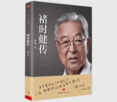

褚时健传

| 作者: 周桦 著 | 开本: 16开 |
| 出版社: 中信出版社 | 纸张: 胶版纸 |
| 出版时间: 2016-01 | 页数: 408页 |
| 版次: 1 | 字数: 424千字 |
| ISBN: 9787508656359 | 定价: 58.00 |
| 分类: 管理 | 装帧: 平装 |
内容简介:
褚时健，这是一个在中国烟草史上举足轻重的名字，这是一位将地方工厂发展成世界行业巨头的能人，临近退休却折戟沉沙。十几年后，褚时健的名字因为橙子享誉大江南北，以70几岁高龄重新创业的故事，激励和影响了无数的人，褚橙也被称为“励志橙”。他的人生几经起落：早年丧父，辍学、烤酒、种地，以此帮母亲谋生；青年，重新求学却遭遇战争，扛过枪打过仗；解放后没能逃脱“右派”的命运，却能埋头搞生产，所在糖厂成为当地条件好的地方；年过半百，接手玉溪卷烟厂，将其打造成亚洲首位、世界第五的集团企业，褚时健也成为“亚洲烟王”。然而，巅峰跌落……当他再次进入公众视野时，已成橙王。拜访、学习甚至膜拜的创业者和企业家蜂拥哀牢山……88年丰富、起伏的人生经历，他的命运和这个国家的政治经济体制过招不断，碰撞不断；他的个人故事紧贴着共和国一个甲子的时代变迁。他的生活里有着生离死别，荣辱变换……人生经历当得上“传奇”二字。在公众的眼光里，他被塑造成一个充满了豪壮悲情的悲剧性人物，甚至褚橙的成功也显得悲壮。但当《褚时健传》的作者走近褚时健才知道，对于自己人生起落的理解，褚时健比任何人都显得平静。《褚时健传》由著名传记作家周桦执笔，历经一年多的走访、调查、创作而成，从褚时健的生平，到他的管理理念、企业家精神，再到玉溪卷烟厂、褚橙等的管理运营，采访之深入，细节之丰富，资料之完整专业，写作之客观理性，值得每一个读者认真品读。
作者简介:
周桦，七零后，人物传记作家。1997年进入媒体工作，曾任国内新锐媒体《新周刊》杂志社记者、编委，负责人物类栏目多年；2001年在《21世纪经济报道》开设专栏“数风流人物”，历时两年；长于财经人物传记撰写，2006年出版《王石这个人》（中信出版社出版）、2011年出版《藏锋-刘永好传》（北京大学出版社出版）。
Copyright © 2018-2020 徐悦佳. All rights reserved.